三阶魔方教程 · 初级
层先法：一层一层来，七步把魔方复原。
先认识魔方
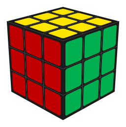
UFR三阶魔方有 6 个中心块，12 个棱块，8 个角块。中心块之间的相对位置是不会变动的， 中心块的颜色指示了该面的颜色。
六个面的颜色各不相同，分别是白色，黄色，红色，橙色，绿色，蓝色。其中白色与黄色相对。 在还原魔方时，一般我们让黄色面朝上，黄色面的九个方块所构成的一层称为顶层， 白色面那一层称为底层。
我们将「自底向上」地还原魔方，也就是先还原底层，然后还原中间层，最后还原顶层。 底层的还原相对来说比较简单，即使没有接触过魔方也能较为轻松地还原， 但是从中间层开始，我们就需要借助公式来还原了。所谓的公式，其实就是一系列的操作， 让某些块移动到正确的位置，与此同时不影响已经还原的部分。下面是常见的公式记号 （字母代表把哪一面转 90°，方向都按面对那一面看时的顺时针算）：
| 记号 | 意思 |
|---|---|
R L | 右面 / 左面顺时针 90° |
U D | 上面 / 下面顺时针 90° |
F B | 前面 / 后面顺时针 90° |
R' | 带一撇 = 反过来（逆时针）90° |
R2 | 转 180°（顺逆都一样） |
x y z | 整个魔方跟着转：x 跟 R 同向、y 跟 U 同向、z 跟 F 同向 |
接下来，我们分七步自底向上地还原三阶魔方。
1白色十字
这一步的目标是还原底层（白色面）的四个棱块，保证棱块侧面的颜色和同侧中心块对齐。
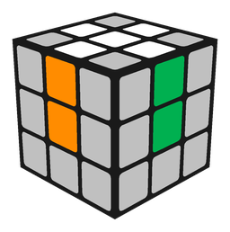
我们可以先把四条白棱转到顶层（黄色面）：
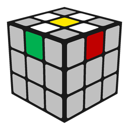
然后转动顶层，当某个棱块的侧面颜色和中心块颜色对上的时候，我们就可以把这面转 180°， 此时棱块就来到了底层的正确位置。当四个棱块都转到底层时，这一步就算完成了。
2底层角块（第一层完成）
这一步的目标是还原底层（白色面）的四个角块，做完之后第一层（白色面这一层）就完成了。
在顶层找一个白色角块，看它另外两种颜色：比如「白-红-绿」角块， 该去的就是红色中心与绿色中心之间的那个角。把它转到那个位置的正上方 （也就是右前那一角的正上方），然后反复做这条公式：
| 情况 | 公式 |
|---|---|
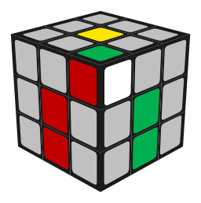 |
做的时候盯着那个白角：它会一进一出——先进到底层、又翻回顶层、再进一次…… 每做完一次看一眼，直到白色朝下、侧面两个颜色也和旁边的中心块对上， 这个角就归位了（最多做 5 次一定会到位）。四个角都这样做完，第一层就完成了。
3中层棱块（第二层完成）
这一步开始，我们就要背公式了。好消息是，这一层我们只需要背一对镜像公式。
下面就是要背的公式：
| 红色为 F 面 | 绿色为 F 面 | ||
|---|---|---|---|
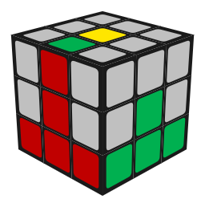 往右插 |
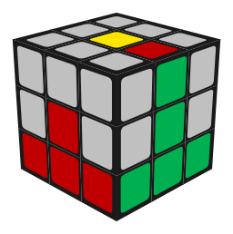 往左插 |
我们首先在顶层找到一个不带黄色的棱块，然后把它转动到它侧面颜色对应的那一面， 然后运用上面的公式，就可以把顶层的一个棱块插入到中层了。
可以发现，这个公式不会影响中层的其他棱块。顶层找不到不带黄色的棱块时， 说明它卡在中层但位置错了 —— 随便用上面一条公式把它顶出来，再重新插即可。
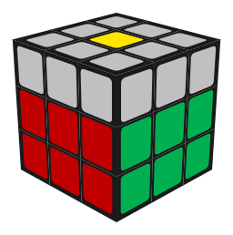
4顶层棱块翻面
准确地说，这一步我们并没有把顶层的四个棱块还原到正确的位置， 而是仅仅让它们朝向正确，也就是黄色朝上，如下图所示。
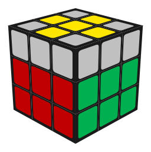
一般我们会遇到四种情况：单点型，一字型，拐角型，十字型。 我们需要通过公式把任何一种情况都转化为十字型。
| 情况 | 公式 |
|---|---|
这两个公式对应拐角型和一字型的情况，至于单点型，我们可以连续使用两个公式转为十字型。
5顶层角块翻面
这一步，我们将让顶层所有块的黄色面朝上，如图。
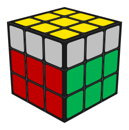
我们会遇到的情况一共有 7 种，每种情况都有对应的公式，根据形状使用正确的公式即可。
| 情况 | 公式 |
|---|---|
如果你暂时不想背那么多公式，也有偷懒的办法：只需要记忆「小鱼公式」就可以。
| 小鱼 | 公式 |
|---|---|
如果遇到其他情况，试着使用几次小鱼公式，就可以转化为小鱼形。如果没有特意记过该在哪个方向 使用小鱼公式，可能得多试错几次，拖慢还原的时间。所以如果有条件，最好还是记住完整的 7 个公式。
6顶层角块归位
我们的目标是让四个角块回到正确的位置。
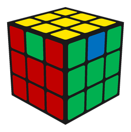
这里我们只有一对镜像公式，可以让三个角块按顺时针/逆时针转动一圈。
| 情况 | 公式 |
|---|---|
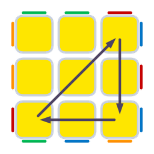 Aa |
|
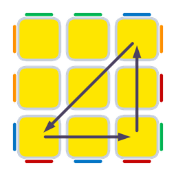 Ab |
怎么找该转哪三个角块呢？这里有个小技巧，就是找是否有位于同一个侧面的角块， 朝向该侧面的颜色一样。如果有，那么把另外两个角块中的随便一个转动到正确的位置， 然后对另外三个使用公式转动即可。当然，有时候也会遇到找不到的情况，如下图， 这说明你需要用两次公式才行，可以先随便用一次然后再看。
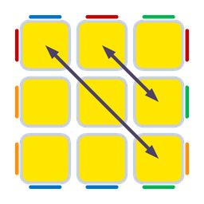
7顶层棱块归位
只差最后一步了！这一步有四种情况：
| 情况 | 公式 |
|---|---|
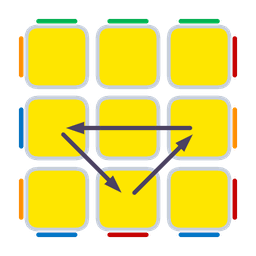 Ua |
|
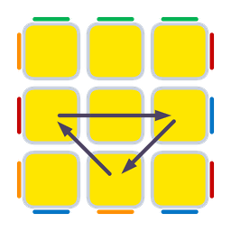 Ub |
|
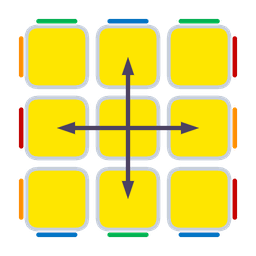 H |
|
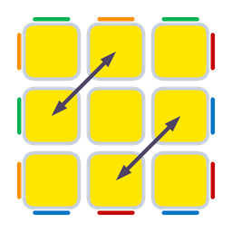 Z |
这一步也有偷懒的方法，你甚至可以一条公式都不记：
| 情况 | 用两次小鱼公式 |
|---|---|
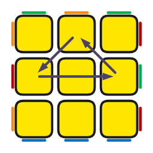 Ua |
|
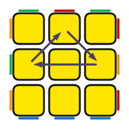 Ub |
这两个写法其实就是各用了两次小鱼公式（26 和 27 各一次，中间把整个魔方转一下 —— y' 或 y），照图上箭头的方向做就行； 另外两种情况 H、Z 也可以只靠小鱼公式解决，各做四次就行。